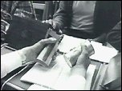
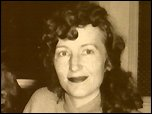
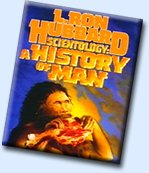

CHAPTER
FOUR
Knowing How To Know
Scientology is used to increase spiritual
freedom, intelligence, ability, and to produce immortality.
- L. RON HUBBARD, Dianetics
and Scientology Technical Dictionary
The word "scientology" was not original to
Hubbard, having been coined by philologist Alan Upward in 1907. Upward used it to
characterize and ridicule pseudoscientific theories. In 1934, the word
"Scientologie" was used by a German advocate of Aryan racial theory, Dr. A.
Nordenholz, who defined it as "The science of the constitution and usefulness of
knowledge and knowing."
The "E-meter," adopted by Hubbard by the
time of the 1952 Wichita lectures, has become an indispensable tool of Scientology.
Electro-psychometers were not a new idea. Their origins trace back to the 19th century.
Jung had enthused about "psychogalvanometers" before the First World War, and
they were still in use in the 1940s. Some psychologists use them to this day, and they are
standardly incorporated in polygraph lie detectors. None of these devices could have the
mystique created around the E-meter by Hubbard.
 A Preclear is connected to the meter by two hand held
electrodes (soup cans, shown right), closing a circuit through which a small
electric current is passed. Fluctuations in the current are shown on the E-meter dial. The
E-meter used by Hubbard was designed and built by dianeticist Volney Mathieson. Its
primary use was, and still is, to detect areas of emotional upset, or "charge."
Hubbard once said that his E-meter compared to similar devices "as the electron
microscope compares to looking through a quartz stone." 1 He was not given to understatement.
The greatest innovation of the Hubbard College
Lectures of March 1952 was the introduction of a new cosmology: Hubbard's history of the
universe. Dianeticists had sometimes audited "past lives," but Hubbard had
published next to nothing on the subject. Now the "timetrack" of the individual
was extended long before the womb. The "Theta-MEST" theory (where Theta is
"life," and MEST, "Matter, Energy, Space and Time") was expanded to
include single "lifeunits" which Hubbard called "Theta-beings."
According to Hubbard, the "Theta-being" is the individual himself, and is trillions
of years old (he was later to increase even this, to "quadrillions"). In simple
terms the "Theta-being" is the human spirit. Unfortunately, Theta-beings have to
share human bodies with other lesser spirits, or entities, originally called "Theta
bodies." The doctrine of the composite being emerged again in the mid-1960s, becoming
the basis of the secret "Operating Thetan," or "OT," levels.
Hubbard claimed that "Theta-beings" had been
"implanted" with ideas during the course of their incredibly long existence
through the use of electrical shock and pain, combined with hypnotic suggestion; aversion
therapy on a grand scale. Hubbard said it was necessary to recall these implants, and to
separate out the different entities in an individual, and put them firmly under the
command of the Theta-being. This was the direction of Hubbard's new auditing techniques.
Hubbard said he had been researching Theta-beings for
over a year, but had not considered it timely to release his findings. He said he had
originally called his subject "Scientology" as early as 1938, and was now
reviving the name. Hubbard later said his third wife, whom he met in 1951, helped coin the
word. 2 During 1952, he produced the basic substance from which
Scientology was wrought. Hubbard also introduced the franchising of his techniques.
Satellite organizations would pay a ten percent tithe to him, as well as paying for
training in new methods created by Hubbard. 3
 In March 1952, Hubbard was married for
the third and final time. Mary Sue Whipp (right) had arrived at the Wichita
Foundation in mid-1951, and worked on the staff there as an Auditor. By April, Ron and
Mary Sue had left the short-lived Hubbard College in Wichita, and moved to Phoenix,
Arizona, where they opened the new world headquarters of Hubbardian therapy. So it was
that Scientology, which Hubbard defined as "knowing how to know" (close to
Nordenholz's definition), was born. 4
Despite Hubbard's assertions that Purcell was
determined to wreck Dianetics, the latter continued to run the Wichita Foundation after
buying it in bankruptcy court proceedings. Ron Howes' Humanics and other derivatives were
flourishing, beyond Hubbard's control, and drifting away from his original ideas.
Hubbard's former publicist, John Campbell, had accused him of increasing authoritarianism
and dogmatism in an independent Dianetic newsletter, writing that "In a healthy and
growing science, there are many men who are recognized as being competent in the field,
and no one man dominates the work .... To the extent Dianetics is dependent on one man, it
is a cult. To the extent it is built on many minds and many workers, it is a
science." 5
Hubbard had decided that psychology had forgotten that
"psyche" meant "spirit," and with Scientology he was going to put this
right. Therapy would now center upon the Theta-being, the spirit. By the final Wichita
lectures, his audience had been down to around thirty. According to Helen O'Brien, the
Hubbard College in Phoenix "languished with never more than a handful of
students." Hubbard's image as a popular psychological scientist had deteriorated. To
many he was a crank with a few impassioned devotees, all magnetized by his unfiagging
charisma.
Hubbard set up the Hubbard Association of
Scientologists in Phoenix, and announced a new state of Clear. The Theta Clear was
supposedly an individual "capable of dismissing illness and aberration from others at
will" and "able to produce marked results at a distance." 6
Hubbard's book What to Audit, was published
in July, claiming in the foreword to be a "cold-blooded and factual account of your
last sixty trillion years." As the book progresses, sixty million becomes seventy,
and then seventy-four trillion years. With Scientology, we are told, "the blind again
see, the lame walk, the ill recover, the insane become sane and the sane become
saner."
In Dianetics: The Modern Science of Mental Health
Hubbard insisted "Dianetics cures, and cures without failure." 7 In What to Audit, he said "in auditing the whole track
[ie "past lives"], one can obtain excellent results... in auditing the current
lifetime, one can obtain slow and mediocre results." In just two years, the allegedly
miraculous techniques of Dianetics had become "slow and mediocre." When
he left the Wichita Foundation, Hubbard also left the rights to his earlier books. He had
to find something new and different if he was to retain any of his dwindling following.
 What to Audit is the foundation of Scientology. It is
still in print, minus one chapter, under the title Scientology: A History of Man
(right). The material in the book is hardly encountered in contemporary auditing,
but is still required reading for the second secret "OT" level of Scientology. A
slim pretense at scientific method is blended with a strange amalgam of psychotherapy,
mysticism and pure science fiction; mainly the latter. What to Audit is among the
most bizarre of Hubbard's works, and deserves the cult status that some truly dreadful
science fiction movies have achieved. The book leaves the strong suspicion that Hubbard
had continued with his experiments into phenobarbitol, and into more powerful
"mind-expanding" drugs, as his son Nibs later asserted.
Hubbard claimed to have absolute proof of past lives,
though he made no attempt at verifiable case histories. He wrote that "Gravestones,
ancient vital statistics, old diplomas and medals will verify in every detail the validity
of 'many lifetimes.' "He was in fact relying on the E-meter which, if it works at
all, can do no more than indicate the certainty with which a conviction is held.
The book contains the usual series of representations
for the eradication of illnesses and physical disabilities, ranging from toothache to
cancer. Scientologists' medical histories bear witness to the inadequacy of these
remedies.
Hubbard was already equivocating about his discovery
of the many "entities" compacted into the individual, and commented that these
entities were probably just "compartments of the mind." Otherwise, his
imagination ran on unchecked. The Theta-being, or "Thetan," governs the
composite which we think of as the individual, but the body itself is governed by the
"genetic entity," a sort of low grade soul, which passes to another body after
death.
Hubbard claimed the Thetan could remodel his physical
form, lose weight, enhance features, even add a little height and was readily capable of
telepathy, telekinesis and remote viewing.
What to Audit lists a series of incarnations
or a "time-track" from the beginnings of the universe to man: the evolution, or
"genetic line," of the human body. According to Hubbard, the
"time-track" runs back to a point where the individual seemed to be "an
atom, complete with electronic rings." After which came the "cosmic
impact," then the "photon converter," and then the first single-cell
creature to reproduce by dividing, the "helper." Passing quickly through
"seaweed," the evolutionary line moved on to "jellyfish" and then the
"clam."
The description of the "clam" makes
particularly fine reading. Hubbard was quite right when he warned that the reader may
think that he, the author, has "slipped a cable or two in his wits." He warned
his followers of dangers inherent in any discussion of "the clam":
By the way, if you cannot take a warning,
your discussion of these incidents with the uninitiated in Scientology can produce havoc.
Should you describe "the clam" to some one [sic], you may restimulate it in him
to the extent of causing severe jaw hinge pain. One such victim, after hearing about a
clam death could not use his jaws for three days. Another "had to have" two
molars extracted because of the resulting ache .... So do not be sadistic with your
describing them [these incidents] to people - unless, of course, they belligerently claim
that Man has no past memory for his evolution. In that event, describe away. It makes
believers over and above enriching your friend the dentist who, indeed, could not exist
without these errors and incidents on the evolutionary line!
The next stage in Hubbard's evolutionary theory was
another shellfish, the "Weeper" (also the "Boohoo," or as Hubbard
jovially refers to it at one point, "the Grim Weeper"). This creature is the
origin of human "belching, gasping, sobbing, choking, shuddering, trembling."
Fear of falling has its origin with hapless Weepers which were dropped by predatory birds.
After a few comments on "being eaten" (which allegedly explains diet fads and
vegetarianism), Hubbard moves forward in evolution to the sloth. It seems that none of the
incarnations between shellfish and the sloth was unpleasant enough to cause major
psychological damage. From the sloth, Hubbard moves on to the "ape," and the
Piltdown man (who had very large teeth, and a nasty habit of eating his spouse); then the
caveman (who presumably had smaller teeth, and used to cripple his wife instead of eating
her). From there, usually "via Greece and Rome," Hubbard's theory moves to
modern times.
What to Audit was published in the year
before complete proof discrediting the Piltdown man was announced. However, Hubbard's book
has remained uncorrected. Quite typically, as Hubbard did not tend to revise or correct
his earlier works.
However, this explanation of evolution relates only to
the "genetic entity." The "Theta-being" only came to earth 35,000
years ago (presumably from outer space; Velikovsky's Worlds in Collision was on
the best-seller lists with Dianetics in 1950), to transform the caveman into Homo
sapiens. The Theta-being has been systematically "implanted" with a variety of
control phrases. The earliest such implant was "facsimile one" (or "Fac
one"), which originated a mere million years ago "in this Galaxy," but was
only given out about ten or twenty thousand years ago in this particular neck of the
galaxy.
Hubbard claimed that "Fac one" was inflicted
with a black box, the "Coffee-grinder" which played a "push-pull wave"
over the victim from side to side, "laying in a bone-deep somatic [pain]." After
this the victim was "dumped in scalding water, then immediately in ice water,"
and finally whirled about in a chair. This was "an outright control mechanism"
to prevent rebellion against the "Fourth Invader Force," and created "a
nice, non-combative, religiously insane community."
Hubbard described many other implants in bizarre
detail including the Halver, the Joiner, the Between-lives (administered in an
"implant station" in the Pyrenees, or on Mars), the Emanator, the Jiggler, the
Whirler, the Fly-trap, the Boxer, the Rocker, and so on, and so on.
In What to Audit, Hubbard also warned that
the Earth was on the verge of psychic war. In a 1952 lecture called "The Role of
Earth," he explained that the Fourth Invader Force still had outposts on Mars. These
were the very individuals responsible for the "between lives implants." Hubbard
made no comment on the later failure of planetary probes to discover any signs of the
Invaders on Mars, nor of the Fifth Invader Force, who supposedly inhabit Venus.
After What to Audit was published, Hubbard
went to England for three months, taking his pregnant wife with him. Mary Sue's first
child, Diana Meredith DeWolf Hubbard, was born in London, in September some six months
after their marriage. At the end of November, Ron was back in Philadelphia at the most
successful of the Association centers, the Scientology organization run by Helen O'Brien
and John Neugebauer (or "Noyga"). Helen O'Brien's book, Dianetics in Limbo,
gives a vivid account of her close association with Hubbard.
In December 1952, Hubbard gave the Philadelphia
Doctorate Course lectures to an audience of just thirty-eight. 8 The lectures were taped, all seventy-two hours of them. The
tapes are still heavily promoted, and sold for a high price, as is a course including them
all. The lectures were based on Hubbard's newest book, Scientology 8.8008. Here
the cosmology of Scientology was further expanded. Hubbard took the symbol "8"
for infinity (by turning the mathematicians' infinity symbol upright), and explained that
the book's title meant the attainment of infinity (the first 8) by the reduction of the
physical universe's command value to zero (the 80), and the increase of the individual's
personal universe to an infinity (the last 08). In short, through the application of the
techniques given in the lectures, the individual would become a god.
The Theta-being, or individual human spirit, acquired
the name it retains in Scientology: the Thetan. The Thetan is the self, the "I,"
that which is "aware of being aware" in Man. Since its entry into the physical
universe trillions of years ago the Thetan, originally all-knowing, has declined
through a "dwindling spiral" of introversion into Matter, Energy, Space and
Time. The Thetan can allegedly "exteriorize" from its physical body, and Hubbard
gave auditing techniques which he claimed would achieve this result. The Thetan is
immortal and capable of all sorts of remarkable feats. Scientologists call these
"Operating Thetan" (or "OT") abilities. They include telekinesis,
levitation, telepathy, recall of previous lives, "exterior" perception (or
"remote viewing"), disembodied movement to any desired location, and the power
to will events to occur: to transform, create or destroy Matter, Energy, Space and Time
(or "MEST").
The main new auditing technique was Creative
Processing. In Creative Processing, the Auditor asks the Preclear to make a "mental
image picture" of something. During a demonstration Hubbard asked a female subject to
"mock-up" a snake. She refused, because she was frightened of snakes. So Hubbard
asked her to "mock it up" at a distance from her. He directed her to make it
smaller, change its color, and so forth, until she had the confidence to let it touch her.
Theoretically, this would allay the subject's fear of snakes.
In the seventy-two hours of the Philadelphia Doctorate
Course, Hubbard expounded an entire cosmology. He talked about implants, the
Tarot, a civilization called Arslycus (where we were all slaves for 10,000 life-times,
largely spending our time polishing bricks in zerogravity), how to sell people on
Scientology, "anchor points" (which Thetans extend to mesh their own
space with that of the physical universe), how to bring up children, and how to give up
smoking (by smoking as much as you can) - about a hundred and one things. And he did it
all with his usual mischievous charm.
Hubbard also defined his Axioms of Scientology at
great length. We learn that "Life is basically static" without mass, motion,
wavelength, or location in space or in time; that the physical universe is a reality only
because we all agree it is a reality. (Robert Heinlein used this idea in Stranger
in a Strange Land. Mahayana Buddhists have mulled it over for centuries.)
It was during the course of the Philadelphia Doctorate
Course that Hubbard mentioned his "very good friend," Aleister Crowley, and in
places his ideas do seem to be a science fictionalized extension of Crowley's black magic.
Crowley too was an advocate of visualization techniques.
On the afternoon of December 16, the lectures were
abruptly interrupted by the arrival of U.S. Marshals. A warrant had been issued against
Hubbard for failing to return $9,000 withdrawn from the Wichita Foundation. There was
something of a scuffle with the Marshals. Hubbard was arrested, but returned to finish the
lecture that evening. 9 Almost immediately afterward, he left for England to complete
the "Doctorate" series there. Hubbard had claimed to have no idea of his income
from the Wichita Foundation, saying he had been denied access to the financial records. 10 Eventually, he settled by paying $1,000 and returning a car
supplied by Purcell. Remarkably, this was the last time that Hubbard was apprehended by
the law.
Hubbard kept his devotees apace of his ideas by
issuing regular newsletters. He continued to make strenuous claims for his miraculous
mental "technology," for example: "Leukaemia is evidently psychosomatic in
origin and at least eight cases of leukaemia had been treated successfully with Dianetics
after medicine had traditionally [sic] given up. The source of leukaemia has been reported
to be an engram containing the phrase 'It turns my blood to water.' " 11
In England in May 1953, Hubbard complained that he had
just given "probably the most disastrous lecture in terms of attendance in the city
of Birmingham." In the same month he explained that he was off to the Continent
"to stir up some interest in Scientology. I will be stopping at various spas and have
an idea of entering this little bomb of a racing car I have in a few of the all-outs in
Europe. The car has a 2.5 litre souped-up Jaguar engine. It is built of hollow steel
tubing and aluminium and weighs nothing. Its brakes sometimes work but its throttle never
fails. I have also a British motorcycle which might do well in some of these scrambles
.... I think by spreading a few miracles around the spas, I will be able to elicit
considerable interest in Scientology." No report followed about the miracles
performed or the races run. Hubbard seems instead to have taken a long holiday in Spain. 12
Meanwhile, Helen O'Brien and her husband were managing
the Scientology empire from Philadelphia. Under their direction, it started to prosper.
The last Hubbard Congress they arranged was attended by about 300, and "each paid a
substantial fee to attend." But in October, O'Brien and Noyga became disillusioned
with Hubbard's attitude and actions:
Beginning in 1953, the joy and frankness
shifted to pontification. The fact filled "engineering approach" to the mind
faded out of sight, to be replaced by a "Church of Scientology"... as soon as we
became responsible for Hubbard's interests, a projection of hostility began, and he
doubted and double-crossed us, and sniped at us without pause. We began to believe that
the villains of dianetics-Scientology, had been created by its founder .... My parting
words [to Hubbard] were inelegant but, I still think, apropos. "You are like a cow
who gives a good bucket of milk, then kicks it over."
Having entered the realm of the spirit, or Thetan, it
was only natural that Scientology should shift its legal status from a psychotherapy to a
religion. Religious belief is protected in the United States by the Constitution. So
Hubbard could entice the public with claims of "spiritual" cures, and the U.S.
government, the American Medical Association, and the American Psychiatric Association
would be severely handicapped in any attempt to restrict him.
FOOTNOTES
Additional sources: Helen
O'Brien, Dianetics in Limbo (Whitmore, Philadelphia, 1966);pp. vii,52-55, 73,
76-77; Hubbard, A History of Man; Hubbard, Philadelphia Doctorate Course (taped
lectures, 1952)
1. Hubbard, A History of
Man, p.6
2. The Auditor 21,
p.1
3. Technical Bulletins of
Dianetics & Scientology vol.1, pp.218, 220
4. The Auditor 21; Technical
Bulletins of Dianetics & Scientology vol.1, pp.218 & 220
5. Wallis, The Road to
Total Freedom, p.80.
6. Promotion piece,
"Announcing the Theta Clear."
7. Hubbard, Dianetics:
The Modern Science of Mental Health, p.40
8. Technical Bulletins of
Dianetics & Scientology vol.1, p.298
9. Letter to the author from
Helen O'Brien; letter to the author from L. Ron Hubbard Jr.; letter to the author from an
attendant of the Philadelphia Doctorate Course; L. Ron Hubbard Jr., transcript of
Clearwater Hearings vol.1 p.283, May 1982
10. Hubbard College Lecture,
no.21
11. Technical Bulletins
of Dianetics & Scientology vol.1, p.337
12. Technical Bulletins
of Dianetics & Scientology vol.1, pp.343, 369; What Is Scientology?,
p.295 |